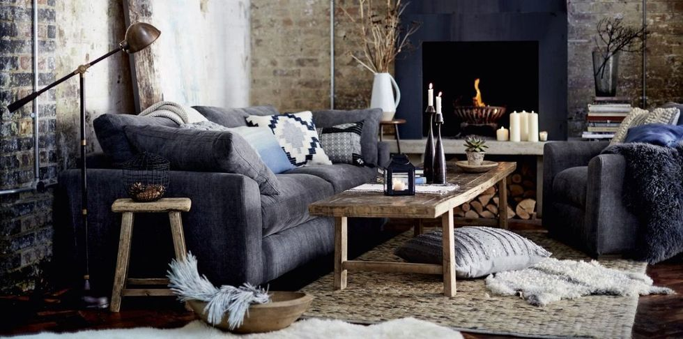
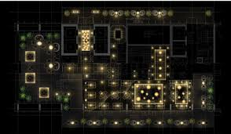
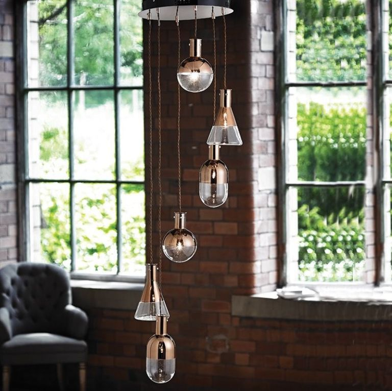
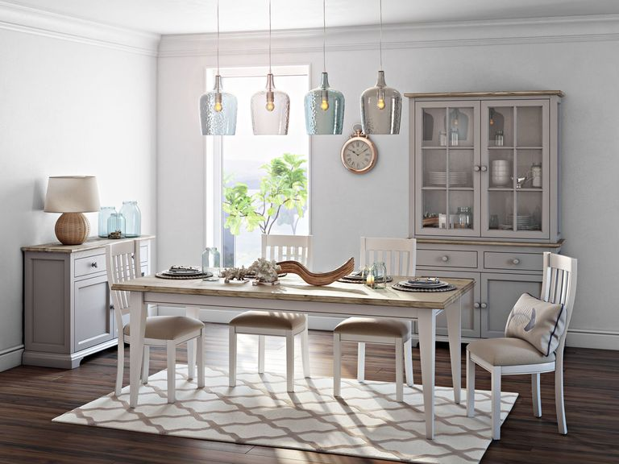

Lighting tricks use to create an atmosphere

When thinking about the flow of space, ambience and atmosphere in your home, lighting can be one of the most fundamental elements.
Brighter lights can make you feel alert and awake, whereas dimmer, softer lights can be relaxing and sleep-inducing. Also adding few
details as frames or flowers vase can make big change in the room. Almost every room can benefit from applying a few interior design
lighting tips.
Here you can find the most lighting & Details tricks to creat an atmosphere:
Make a lighting plan:

If you're starting from scratch or redecorating a room, create a mini brief or lighting plan that tackles the essentials. Think about what
activities take place in each room (eating, relaxing, working), key features of a room you want to highlight and what architectural
boundaries you may need to take into account. Consider style, scale, output and even colour temperature of lights before you go rushing into
design decisions. Early planning makes for less headaches and rushed last minute decisions.
Layer your lighting:

Take a layered approach to lighting with different light sources across different levels to create ambience and interest in a room. Use
lighting to make the most of a room's size and shape –uplighting makes a room feel larger, low hung pendants will create an illusion of
height and clusters of lighting make large rooms seem cosier.
Make sure the lighting is helpful:

Consider what tasks you may be undertaking in each room where lighting can affect or aid you. Cooking requires more concentrated
lighting, therefore a combination of bright downlights and recess lighting, in cabinets and above stove tops, is useful. For reading, flexible
and directional lighting aimed away from you is better. Powder rooms require a combination of sidelights and downlights. Dimmers will
quickly become your new best friend, providing an energy efficient and effective way to quickly change the atmosphere and warmth of a
room.